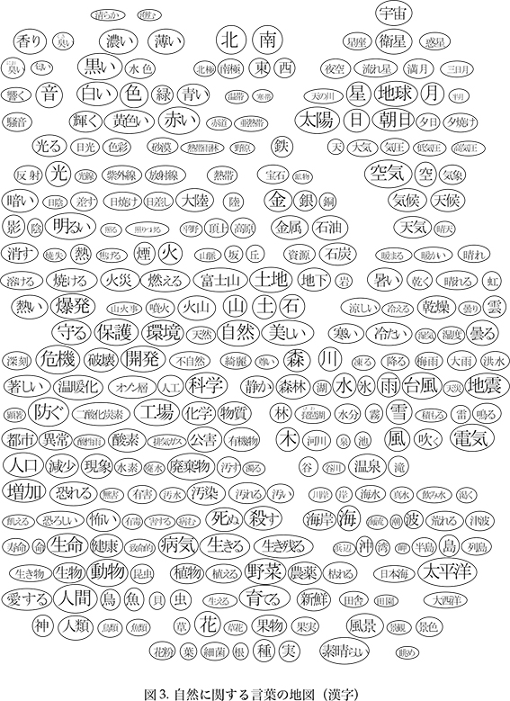
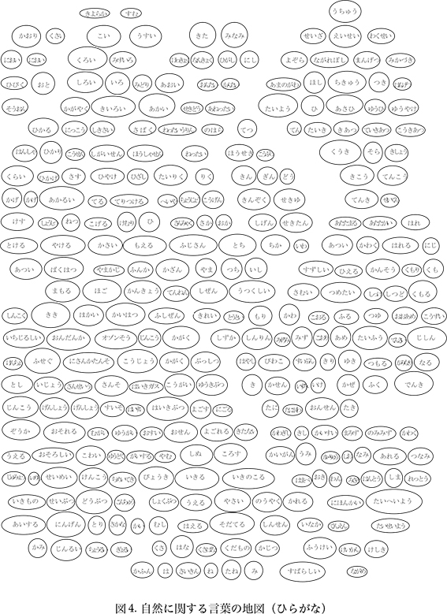
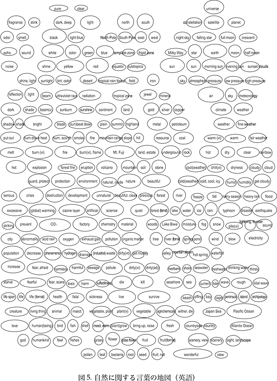

10 語彙マップを用いた漢字語彙学習
この本は漢字がよく使う順に並べられています。そのため、それぞれの漢字に意味のつながりがありません。ここにこの本での学習法とは違う、意味を重視した学習方法として、語彙マップを用いた学習の一例をあげておきます。自分の覚えたい言葉を優先して学習したい人は参考にしてみてください。
図3～5の言葉の地図には、自然に関する言葉がまとめてあります。字が大きいものほどよく使われるものです。つながりの強い言葉が近くになるように置かれています。この地図にある言葉は大半が日本語能力試験N2程度のものです。
図3が漢字表記の地図、図4がひらがな、図5が英語訳です。それぞれの地図の同じ場所に同じ言葉があります。これらの図を使って次のような学習ができます。
(1) まず、この「自然」に関する言葉の地図をよく眺めてどんな言葉がのっているか見てください。知っている語と知らない語を確認してください。分からない語は、読みや英訳を見て確認しましょう。漢字が書ける人はひらがなの地図を見て漢字を書いてみましょう。ひらがなの地図では、長音、促音、濁音に気をつけて、自分の記憶が正しいか確認してみましょう。知らない言葉で必要なものは覚えましょう。空白部分にさらに覚えたい語を書き足すのもよい学習になります。
(2) 地図の言葉を使いながら、原稿用紙に作文を書いてみましょう。クラス活動の場合は4人ぐらいのグループになり、１人100字程度ずつ書いて1つの作文にしましょう。まず、ちず地図のどの部分を中心に使うかテーマを決め、題と構成を考え、文体を決め、分担部分を割り当てて書いてください。書き終わったら読み合わせて、誤りや重複がないか、つながりがよいか等を全員で確認しましょう。
(3) さらに、この方法で自分の興味のある分野や専門分野についての言葉の地図を作りましょう。まず、自分の知っている言葉を書き込んで地図を作り、自分の頭の中にある言葉を整理して、その後で辞書や参考資料を使って学びたい言葉を加えていきましょう。作った地図の語を使って自分のための漢字テストを作ってみるのもいいでしょう。また、それらの言葉を使って本文にあるような例文を自分で作ると作文の練習にもなります。
［参考文献］
徳弘康代（2006）『日本語教育における中上級漢字語彙教育の研究』早稲田大学日本語教育研究科博士論文 参照PDF
徳弘康代・川村よし子（2007）「漢字2,100字の単語数調査と単語一覧表の作成」『早稲田日本語教育学』第1号, 1-10.
徳弘康代・飯嶋美知子・山田京子・河住有希子・吉田雅子（著）(2010)『語彙マップで覚える漢字と語彙中級1500』Jリサーチ出版.


